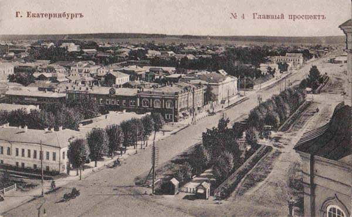
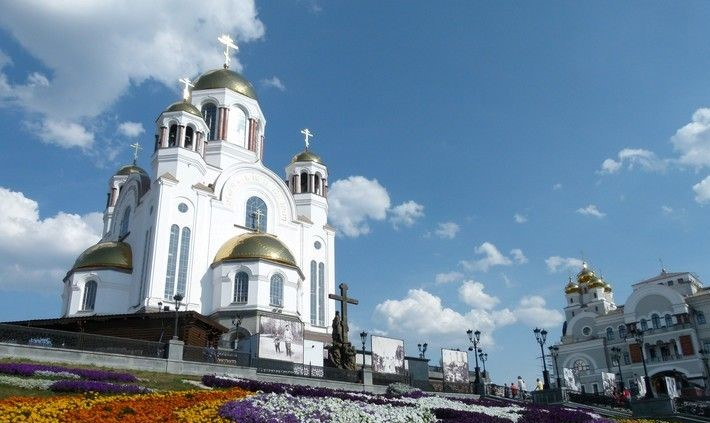

La ciudad fue fundada en 1723 por orden del emperador Pedro el Grande como centro metalúrgico del país. La capacidad tecnológica de la gran planta industrial en los primeros años de su funcionamiento superaba los logros de las empresas metalúrgicas rusas y mundiales. La fábrica era también el centro administrativo de la industria minera de toda la región de los Urales y Siberia. Los fundadores de Ekaterimburgo son el prominente hombre de Estado Vasili Tatíschev y el militar e ingeniero de origen alemán Gueorg Vilguelm de Guennin (Georg Wilhelm de Gennin). El emperador bautizó la ciudad en honor a su esposa, Catalina (Yekaterina). Sin embargo, a finales del siglo XVIII en los Urales surgió otro centro administrativo, la ciudad de Perm, y Ekaterimburgo perdió su papel hegemónico en la región. Durante el reinado de Catalina II, a través de la joven ciudad se abrió la Ruta Siberiana, una carretera que conectaba la Rusia europea con Siberia y China. De este modo la ciudad se convirtió en una pieza clave en el camino hacia la rica y extensa Siberia y en una “ventana a Asia” del mismo modo que San Petersburgo era “la ventana a Europa” para Rusia.

Postal antigua de Ekaterimburgo.
El último zar ruso, Nicolás II, fue ejecutado por los bolcheviques junto con su familia en la ciudad en el sótano de la casa del comerciante Ipátiev el dieciocho de julio del año 1918. En el año 1977 el edificio fue demolido y en el 2003 en el mismo lugar fue construido un templo ortodoxo en honor a los mártires de la familia imperial. En la época soviética la ciudad nuevamente se convirtió en la capital informal de la región de los Urales. Se hizo famosa por sus nuevas grandes plantas metalúrgicas y de construcción de maquinaria. La planta Uralmash, construida en aquella época, sigue siendo una de las más grandes de Rusia. Desde 1924 hasta 1991 la ciudad llevó el nombre de "Sverdlovsk", en honor a Yákov Svérdlov, político y revolucionario bolchevique.

Templo Ortodoxo - Catedral sobre la sangre.